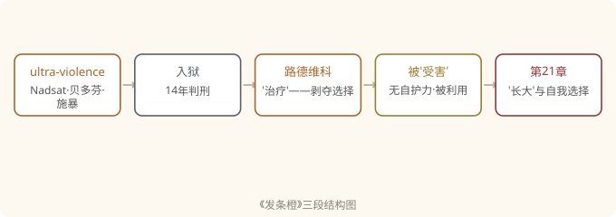

发条橙
一、基本信息
| 作者 | 伯吉斯 |
|---|---|
| 成书/出版 | 1962年出版（Britannica） Anthony Burgess — Encyclopaedia Britannica（百科全书） |
| 国别/地区 | 英国 |
| 时代 | 现当代 · 20世纪 |
| 体裁 | 长篇小说（反乌托邦/语言实验） |
| 语言 | 英语（Nadsat 发明俚语） |

《发条橙》三段结构图（主题·结构图）
二、创作背景
语言（Britannica）：'written in an invented slang mixing British, American, and Russian elements'（混合英、美、俄元素的发明俚语 Nadsat——'Alex'的叙述语言）。
21章/20章：英国版21章（' redemption'结尾），美国版删去末章——伯吉斯不满（通说待核）。
改编：库布里克1971年电影（'especially after the 1971 film'——Britannica）——伯吉斯对电影'神化'的复杂态度（通说待核）。
三、内容脉络
第一部分：15岁流氓阿列克斯（Alex）与三同伙（droogs）夜晚'ultra-violence'——打劫、强奸、斗殴；入狱判14年（通说细节）。
第二部分：'路德维科技术'（Ludovico）——强迫看暴力影片以'治疗'暴力（'a real horrorshow piece of ultra-violence'——通说待核）；出狱后被'受害'、无暴力能力也无自护能力。
第三部分：被昔日同伙（已成警察）毒打、被'革命者'利用；遇作家 F. Alexander（其妻曾遭阿列克斯施暴——通说细节）；自杀未遂后'治愈'——21章结尾：阿列克斯长大、'意象中自己的儿子'——'暴力像青春期会过去'（通说解读；美国版删章无此段）。
四、主要人物表
| 人物 | 身份 | 说明 |
|---|---|---|
| 阿列克斯 | 15岁流氓头目 | 贝多芬 lover + ultraviolent——'审美化暴力'的反英雄 |
| F. Alexander | 作家 | '复仇的伪善者'——'把人当发条橙'（通说） |
| 监狱牧师 | 监狱牧师 | '善必须是选择的善'（原文意，待核）——与'治疗'的伦理对立 |
| P.R. Deltoid | '矫正官' | '后青春期'官僚 |
五、主题与艺术特点
- 自由意志 vs 国家改造：'善必须是选择的善'（牧师论——原文意，待核）——反'行为主义乌托邦'。
- 语言与暴力：Nadsat 使暴力'审美化'又被'疏离化'（通说）。
- '发条橙'：'有机体被机械驱动'（Burgess 语意，通说待核）——被国家发条化的'有机'人。
- 艺术特点：Nadsat 语言、21章结构、音乐（贝多芬第九）与暴力的并置。
六、影响与评论
- Britannica（Burgess 条）：A Clockwork Orange (1962)——'invented slang'使其成名（1971电影后尤甚——Britannica：especially after the 1971 film）。
Anthony Burgess — Encyclopaedia Britannica（百科全书） - 库布里克电影（1971）——英国禁映至1999（通说待核）。
Anthony Burgess — Encyclopaedia Britannica（百科全书） - '发条橙'进入语言（通说待核）；文化影响（朋克、电影暴力史）。
Anthony Burgess — Encyclopaedia Britannica（百科全书）
七、阅读建议
难点
- Nadsat 俚语（俄语词根）——先读词汇表。
- 21章 vs 20章版本——务必读英国版末章。
- 暴力描写的'音乐性'——勿当成单纯的暴力小说。
- 王之光译《发条橙》（译林出版社，通说待核）：通行本。
- 英文本：Penguin 版（含作者导言——通说待核）。
通读三部分 → 精读第21章（美国版删章）→ 对照库布里克电影。
八、待核实
- 1962年 Heinemann 出版细节待核。
- 美国版删章（W.W. Norton 1986 含末章）待核。
- 王之光译本信息待核。
- 1971年电影英国禁映年份待核。
本页主要来源
伯吉斯的其他收录作品：发条橙